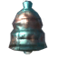
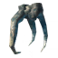

Fader: location, summoning and tips
Fader: location, summoning and tips
Fader, the undead dragon of the Ashlands, is the seventh boss. He has no weakness, twice the health of the Queen and fills his arena with green fire. This fight demands the best gear the Ashlands have to offer and constant movement.
| Biome | Ashlands |
|---|---|
| Health | 25,000 |
| Summoning item |  3 × Bell |
| Weak to | – |
| Resistant to | Pierce |
| Immune to | Fire, Spirit |
| Drops |  5 × Kindled Ribs |
| Forsaken power | Adrenaline builds twice as fast, you are staggered much less easily and you gain 50 % fire resistance. |
How to find Fader
Fader's altar stands in a large round arena in the Ashlands. Red runestones inside Charred Fortresses mark it on your map.
To summon him, you need 3 Bells. Each Bell is forged from 3 Bell Fragments at the Black Forge, and the fragments lie in the chests of Charred Fortresses. Break the fortress gates with a battering ram, clear the fortress and loot the tower. Place the three Bells in the arena and activate the altar.
Preparation
- Wear fully upgraded flametal armour, or the Ask set if you prefer light armour.
- Fader is immune to fire and spirit and resists pierce. Use slash or blunt weapons, ideally with frost or lightning damage.
- Drink fire resistance barley wine and renew it during the fight.
- Take major healing meads and lingering stamina meads, and eat the best Ashlands food in all three slots.
- Clear the surroundings of the arena thoroughly. Charred, Morgens and Asksvin that wander in make the fight chaotic.
- Build a portal and a small stone shelter outside the arena. The Ashlands spawn enemies constantly, so protect the portal with walls.
Attacks
- Bite and claws: wide, very heavy melee attacks in front of him. Block with a strong shield or stay at his flank.
- Spin: he turns on the spot and hits everything around him. Step back when he starts to turn.
- Flame breath: a line of fire that leaves burning ground. It cannot be blocked. Strafe out of the line.
- Fissure: he slams the ground and a rift runs towards you, erupting in spikes and leaving a pool of green fire.
- Wall of fire: a ring of flames closes around you. Leave it immediately.
- Meteors: he rears up and meteors rain down across the arena.
- Summon: he spits orbs that turn into Charred warriors and marksmen.
Tips and tricks
- Stay at his side or behind him. Almost all dangerous attacks point forward.
- Never stand in green fire. The pools last a long time and slowly make the arena smaller, so lure him to a clean part of the arena.
- Keep moving the whole time. Most of his area attacks aim at where you are standing when he starts them.
- Kill the summoned Charred quickly, or position yourself so that Fader's own attacks hit them.
- Bonemass's power and a tower shield make his melee attacks survivable. Do not try to block the breath or the fissure.
- In a group, split the roles: one player keeps his attention, one handles the summoned enemies, the rest deal damage.
Reward
Fader drops 5 Kindled Ribs and his trophy. The ribs are needed for the Eternal Pyre and open the way to the last crafting tier before the Deep North.
After his defeat the Bog Witch sells the spice of the Ashlands.
His Forsaken power builds adrenaline twice as fast and makes you much harder to stagger. It is a strong choice for aggressive melee builds.